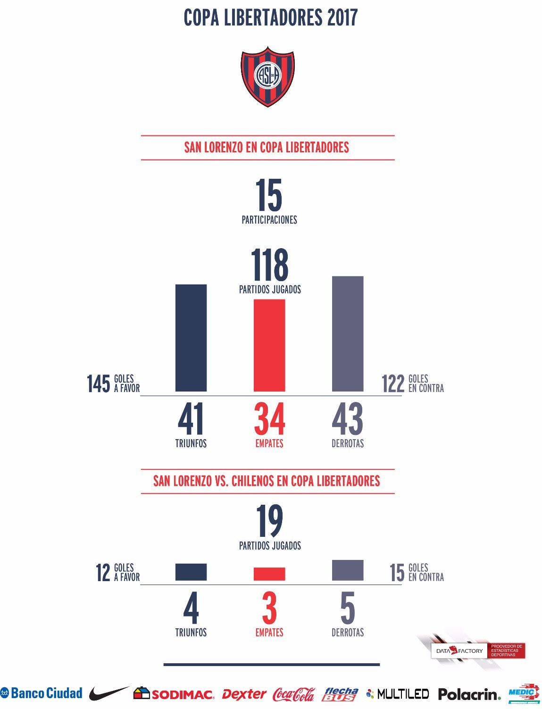
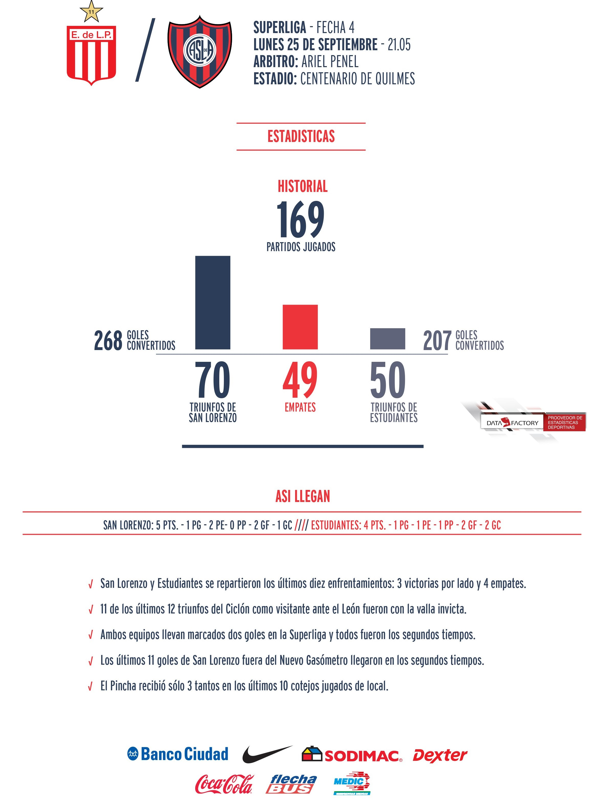

Se Parte de Nuestra Gran Familia
Historia
Fundación
A principios de 1907, un grupo de jóvenes entusiastas liderados por Federico Monti y Antonio Scaramusso pasaba horas y más horas jugando al fútbol en la intersección de las calles México y Treinta y Tres Orientales. Ahí nacieron Los Forzosos de Almagro, como se autodenominaban, con un lema que decía: "Hay que romperse todo para vencernos". La historia de esta pandilla daría un giro divino gracias a la visión social de Lorenzo Bartolomé Martín Massa, el padre salesiano que buscaba sacar a los chicos de los peligros de la calle. ¿Cómo lo hizo? Abriendo las puertas del Oratorio San Antonio para que los pibes practicaran deportes a cambio de asegurar su presencia en la misa los domingos. Así, el 1° de abril de 1908, luego de una asamblea extraordinaria, el club pasó a llamarse San Lorenzo de Almagro.
El Viejo Gasómetro
Se inauguró hace un siglo, en aquel 1916 que tenía al mundo en guerra, a Albert Einstein publicando su Teoría de la Relatividad y a Hipólito Yrigoyen gobernando a la Argentina. El Gasómetro de Avenida La Plata no tardaría en convertirse en uno de los estadios más importantes del país: cuerpo de madera, corazón de hierro y alma generosa, popular, de Boedo y todo el cielo, un coloso que podía albergar más de 75.000 espectadores. Símbolo del barrio, tuvo su bautismo futbolero el 7 de mayo de aquel año, cuando San Lorenzo venció 2-1 a Estudiantes. Leyendas como Jacobo Urso, Federico Monti y Luis Gianella jugaron esa tarde. El Gasómetro (apodo que sustituyó todo nombre oficial y cuyo origen tiene que ver con su similitud con los depósitos de gas de aquel tiempo) fue sede de la Copa América en sus ediciones de 1929, 1937 y 1946. En su césped brillaron equipos legendarios, como el de Farro-Pontoni-Martino, los Pistoleros del 59, los Carasucias y Los Matadores de los 60’s, el bicampeón del 72, y a su alrededor vibró el deporte en su totalidad, además de los carnavales de tango y jazz, los recitales inolvidables (desde Carlos Santana hasta Sandro) y el ingenio incomparable de la Gloriosa hinchada de San Lorenzo, que compuso sobre sus tablones los primeros hits del fútbol nacional. Su último partido allí se jugó en 1979 (empate sin goles ante Boca) y el sueño latente es que, en poco tiempo, la pelota vuelva a rodar en ese predio. “Vamos a volver”, promete el pueblo sanlorencista. Y así será, para emoción de millones alrededor del mundo.

El Nuevo Gasómetro
El sueño de la casa propia, tras la clausura del estadio de Avenida La Plata, en 1979, se había convertido en una obsesión. “El Nuevo Gasómetro ya está...”, recitaba la Gloriosa, domingo a domingo, mientras se acercaba el momento. Y hubo que esperar 14 años entre aquel doloroso adiós y la inauguración del Pedro Bidegain (en honor a aquel notable dirigente de los 20’s y 30’s), en el predio donde florece la Ciudad Deportiva. La peregrinación por canchas ajenas (batiendo récords de recaudación en 1982, durante el paso por el Ascenso) ya era cosa del pasado. El Bidegain, bautizado en diciembre de 1993 y cuyo campo de juego es el más grande de la Primera División, ya sabe de gloria azulgrana: allí se consagraron los campeones de 1995, 2001, 2007 y 2013, además de ser testigo de las tres coronaciones internacionales del club: Mercosur 2001, Sudamericana 2002 y la ansiada Copa Libertadores 2014. El estadio donde se gestó la leyenda de Pipi Romagnoli, donde Gorosito y Silas tiraron paredes, donde se retiró el Beto Acosta y donde Néstor Ortigoza pateó el penal más importante de nuestra historia. También en el Nuevo Gasómetro, San Lorenzo logró el récord de 13 victorias consecutivas, al vencer 1-0 a Boca en 2001 (gol de Diego Capria). Esa marca todavía permanece imbatida en el fútbol argentino. Hoy, el Nuevo Gasómetro se embellece constantemente, con importantes obras bajo su platea Sur, vestuarios renovados y modernas salas de prensa. Y, por supuesto, vibra al compás de su gente, santa costumbre que nunca pierde vigencia.
Estadisticas
San Lorenzo Copa Libertadores 2017
San Lorenzo vs Estudiantes de La Plata
